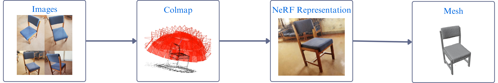

Figure 1: Overview of the proposed pipeline. First, we collect a set of images of the scene using a smartphone camera. Second, we use
structure-from-motion software to determine camera poses. Third, we train a NeRF on these labeled images. Then, we extract the mesh from
the NeRF. We import the mesh of the scene along with mesh of obstacles into the physics simulator and train the agent to evade these
obstacles using reinforcement learning. We capture a video of the agent completing the course and record the camera positions. We render
the video from NeRF using the recorded camera positions and combine the two videos to get the final combined video.
